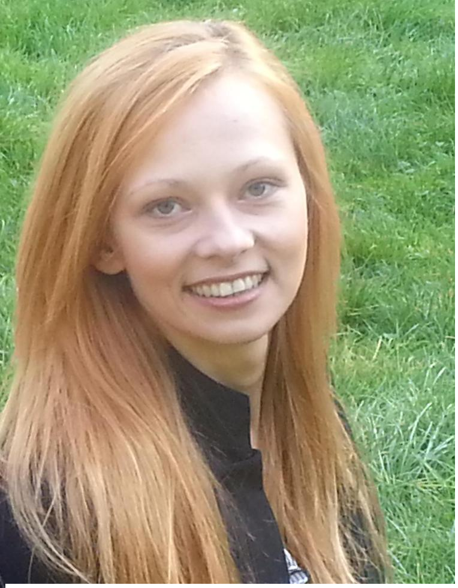
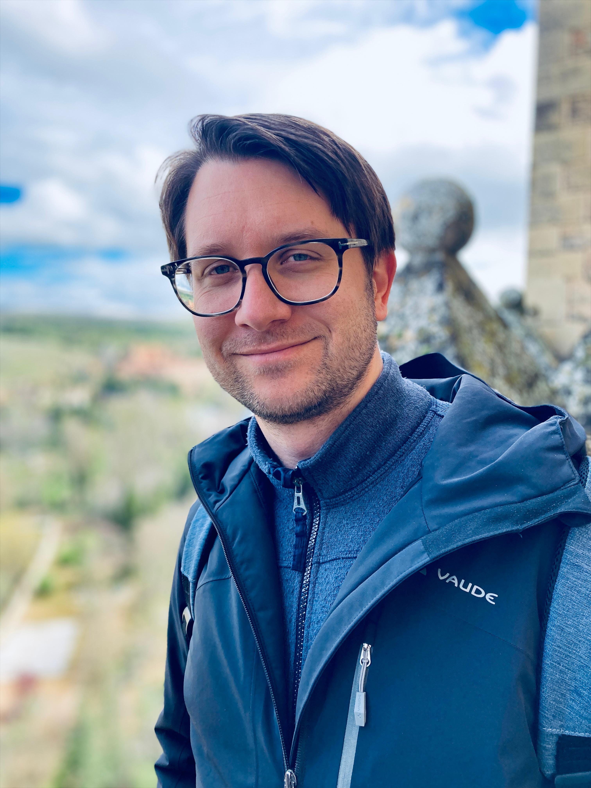
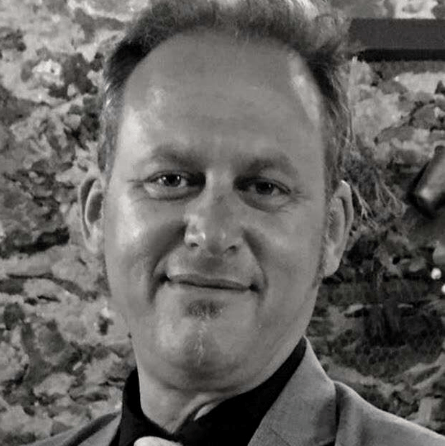
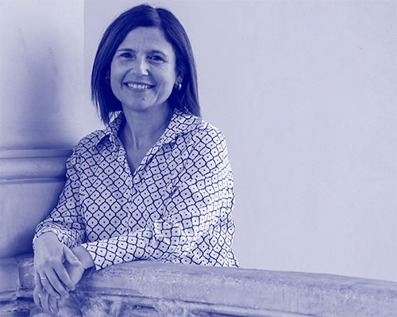

Eingeladene Referent:innen

Prof. Dr. Karolina Broś
Universität Warschau

Prof. Dr. Felix Tacke
Philipps-Universität Marburg

Prof. Dr. Antonio J. Sosa Alonso
Universität La Laguna

Prof. Dr. Marta Samper Hernández
Universidad de Las Palmas de Gran Canaria
Programm
Anmeldung
Die Anmeldung für den Workshop ist bis zum 20. Mai 2026 möglich. Bitte füllen Sie das folgende Formular aus, um sich anzumelden.
Tagungsort

Hauptgebäude (Main building)
Humboldt-Universität zu Berlin
Unter den Linden 6, 10117 Berlin, Deutschland
Zeitplan & Räume
Räume: 1066e & 2070A
Call for Papers
Call for Papers
Dieser Workshop, der im Rahmen des SFB 1412: Register vom Projekt A09 (https://sfb1412.hu-berlin.de) organisiert wird, untersucht die Schnittstelle von Register und soziogeographischer Variation sowie die Beziehung dieser Dynamiken zu Standardisierungsprozessen, mit einem besonderen Fokus auf dem Spanischen und seinen weltweiten Varietäten.
Die Kanarischen Inseln bilden einen linguistisch komplexen Raum: Politisch zu Spanien gehörend und den dort geltenden Standardnormen unterworfen, zugleich jedoch historisch und strukturell eng mit lateinamerikanischen Varietäten verbunden. Die Situation wurde als diaglossisch (Auer 2005, 2011) beschrieben und weist ein Dialekt-Standard-Kontinuum auf, das Zwischenvarietäten wie Regionalstandards umfassen kann.
Ausgehend von neueren Arbeiten innerhalb des SFB 1412 (z. B. Lüdeling et al. 2024) verstehen wir Register nicht als eine separate Schicht, die zur dialektalen und diastratischen Variation hinzukommt, sondern als eine Dimension, die systematisch mit diesen Strukturen interagiert. Registerdifferenzierung kann dabei überregionale Normen verstärken, lokale Merkmale bewahren oder Variationsmuster insgesamt neu organisieren.
In welchem Zusammenhang stehen Verschiebungen in der Formalität und Tendenzen hin zu überregionalen Normen? Inwiefern lassen sich Regionalstandards als Ergebnis eines strukturierten Zusammenspiels von Register, diastratischen (z. B. Bildung, Alter) und diatopischen Variablen empirisch erfassen? Und wie wirkt sich die fortschreitende Standardisierung auf die interne Architektur von Registersystemen aus?
Wir begrüßen Beiträge, die das Zusammenspiel zwischen diaphasischer, diastratischer und diatopischer Variation untersuchen, sei es in gesprochenen, geschriebenen oder digital vermittelten Daten zu romanischen Sprachen (insbesondere Spanisch). Wir sind besonders an Arbeiten interessiert, die diese verschiedenen Dimensionen integrieren statt sie isoliert zu betrachten und damit theoretische Registermodelle in komplexen Variationssystemen weiterentwickeln.
Der Workshop zielt darauf ab, das traditionelle dreigliedrige Variationsmodell kritisch zu überprüfen. Dabei geht es um die Frage, ob es weiterhin ausreicht oder ob Register stärker als Teil umfassender Prozesse soziogeographischer Stratifizierung und sprachlichen Wandels verstanden werden müssen.
Einreichungsformat
Wir begrüßen Beiträge für:
- 30-minütige Vorträge (+ 15 Minuten Diskussion)
- Posterpräsentationen
Einreichungskriterien (Geschlossen)
- Länge: 300–500 Wörter (ohne Referenzen)
- Format: Word und PDF, anonymisiert für eine anonyme Begutachtung (blind review). Bitte verwenden Sie die folgende Vorlage für Ihre Einreichung: Abstract-Vorlage (.docx)
- Inhalt: Abstracts sollten die Forschungsfrage(n), den theoretischen Rahmen, die Methodik, (vorläufige) Ergebnisse sowie potenzielle theoretische und/oder methodische Implikationen explizit nennen. Die vollständigen bibliographischen Angaben sollten in der Bibliographie aufgeführt werden.
- Sprache: Englisch oder Spanisch
- Senden Sie Ihr Abstract an: registerworkshop2026@gmail.com
Fristen
- Abgabefrist: 15. April 2026 (Geschlossen)
- Anmeldung: bis zum 20. Mai 2026
- Workshop: 8.–10. Juni 2026
Melden Sie sich jetzt über das obige Formular an oder unter:
Online-Anmeldeformular (Direktlink)